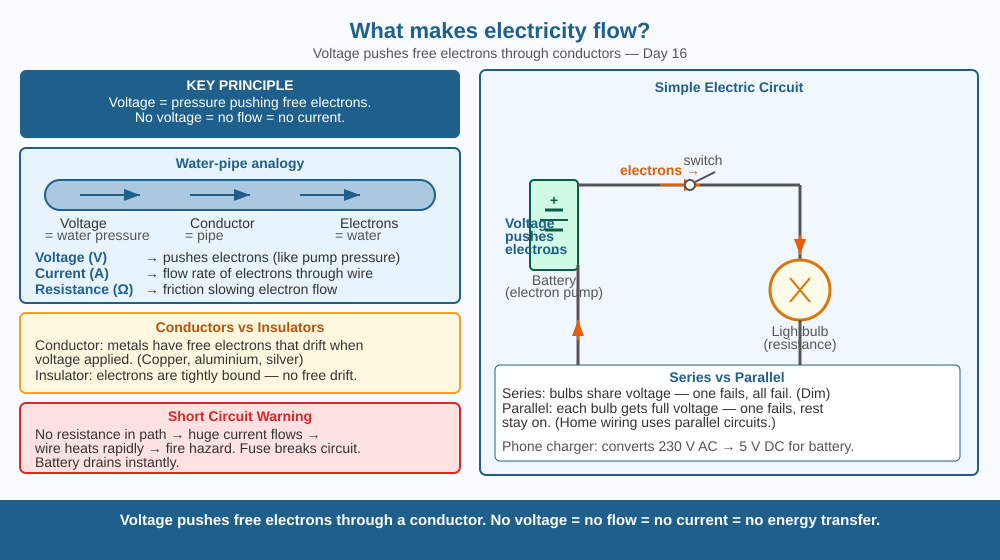

Discover why electricity flows — and why a battery is actually a kind of pump for tiny particles called electrons.
You press a switch and a bulb lights up instantly. But what actually travels through the wire? Is it heat? Is it light itself? And if we can't see it, how do we know anything is moving at all?
A metal wire is full of free electrons — tiny negative particles that are loosely attached and can drift from atom to atom. Normally they wander randomly in all directions, so no useful current results. A battery creates a potential difference (also called voltage) between its two terminals — one end is crowded with electrons (negative terminal, −), the other is electron-hungry (positive terminal, +). That imbalance is the push. Connect a wire between them and every free electron in the wire is shoved in the same direction at once — that coordinated drift is electric current.
Current is the number of electrons passing a point per second. Voltage is the strength of the push (like water pressure). Resistance is anything that slows the flow (like a narrow pipe). These three are linked: a higher voltage forces more current through the same resistance.
Think of a circuit like a water system:
| Water system | Electrical circuit |
|---|---|
| Pump | Battery |
| Water pressure | Voltage |
| Water flow rate | Current |
| Narrow pipe | Resistance |
| Taps & pipes | Wires, bulbs, switches |
The pump does not create water — it moves existing water around a loop. Similarly, the battery does not create electrons — it moves existing electrons around the circuit. No current can flow unless the loop is closed (unbroken).

The diagram shows a battery (marked + and −) connected by wires to a light bulb. Electron flow arrows go from − terminal through the wire, through the bulb filament (where resistance converts electrical energy to light and heat), and back to + terminal. A broken wire (open switch) stops the flow — the bulb goes dark.
Make a simple circuit with a 1.5 V AA battery, a torch bulb (or LED + 100 Ω resistor), and two wires. Touch both wires to the battery terminals — bulb glows. Lift one wire — it goes dark. Wrap the bare wire end in a rubber band — dark again (rubber is an insulator, blocking electron flow). Use a coin between the wire ends — glows again (metal is a conductor).
A battery that has "run out" still contains the same chemicals and the same electrons. What has actually been used up? (Hint: think about the water-pump analogy — the pump doesn't lose water, it loses the energy needed to keep pumping.) What does recharging a battery actually restore?
What causes electric current to flow through a conductor?
Why is understanding voltage and electron flow more useful than knowing that electricity comes from a battery?
If you connected a wire between the two terminals of a battery without any bulb or resistor, what would you predict?
A torch has two 1.5 V batteries. If you put them in series (+ of one touching − of the other), the combined voltage is 3 V. If you put them in parallel (both + ends together, both − ends together), the voltage stays at 1.5 V but the batteries last longer. Why does the arrangement change how bright the bulb is and how long it lasts?
Electrons in a wire drift at only about 0.1 mm per second — slower than a snail. Yet your light switches on instantly. This seems impossible until you realise the wire is already packed with electrons end to end. When you push one in at the battery end, the pressure travels at close to the speed of light and a different electron pops out at the bulb end almost immediately — just like water coming out of a full hose the instant you turn the tap.
Voltage (potential difference) pushes free electrons through a closed circuit. More voltage = more current. Break the circuit = no flow. The battery moves electrons — it doesn't create them.